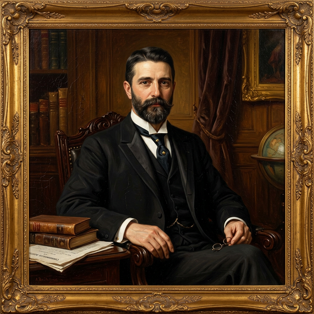

A comprehensive biography exploring the life and legacy.
Alfred Deakin was born on 3 August 1856 in a small cottage in Collingwood, Melbourne — a "native-born" Australian of the gold-rush generation. His father, William Deakin, was a restless Englishman from Northamptonshire who had arrived in Adelaide in 1850 before joining the Victorian gold rush; he eventually found stability as a manager for the coaching firm Cobb \& Co.. His mother, Sarah Bill, was Welsh. Growing up in a "respectable suburbanite" household of modest means, Deakin was a dreamer and an insatiable reader from childhood.[1]
He was educated at Melbourne Church of England Grammar School, where he was fascinated by the oratory of headmaster Dr. John Bromby. Despite later looking back at his school days as a time of "wasted opportunities," he matriculated in 1871 and entered the University of Melbourne to study law. By day he worked as a schoolteacher and private tutor to pay his way, while by night he frequented the University Debating Club, honing the "silver tongue" that would later define his political career.[1]
Before finding his feet in politics, Deakin was a prominent figure in the Spiritualist movement in Melbourne, attending seances and even conducting the "Progressive Lyceum" Sunday school. His literary ambitions were equally strong; he wrote poetry, plays, and a lengthy allegory titled A New Pilgrim's Progress (1877). However, a chance meeting in 1878 with David Syme, the formidable proprietor of the Melbourne Age, changed his life. Syme hired him as a journalist, mentored him in the philosophy of protectionism, and eventually backed him as a Liberal candidate for the Victorian Parliament.[1]
On 3 April 1882, Deakin married Elizabeth "Pattie" Browne, the 19-year-old daughter of a wealthy spiritualist. The marriage was a deep intellectual and emotional partnership that lasted until his death, though it began under a cloud of disapproval from his in-laws.[1]
Deakin's devotion to Australian federation was almost mystical. After serving as a minister in Victorian governments during the 1880s — where he pioneered Australia’s first major irrigation schemes and factory reforms — he refused all further cabinet posts after 1890 to focus solely on the federal cause. He was the youngest delegate to the 1891 National Australasian Convention and served as a key member of the constitutional drafting committees.[1]
While Barton was the movement’s public leader, Deakin was its "backstage" engine — the master of compromise who smoothed over ruffled feathers between the colonies. He was the central figure in the Victorian referendum campaigns, and in 1900 he joined the delegation to London to defend the Constitution Bill against the British Colonial Office. Upon victory, he famously danced "hand in hand" with Barton and Kingston in a London hotel room.[1]
Deakin served as Australia's first Attorney-General under Barton, personally drafting the legislation that created the High Court of Australia. He then served three separate terms as Prime Minister (1903–04, 1905–08, and 1909–10), presiding over the most productive decade in the nation’s history. His governments established the pillars of early 20th-century Australia, often called the "Deakinite Settlement":[1]
- The White Australia Policy: Enshrined via the Immigration Restriction Act 1901, which Deakin defended as a means to preserve national unity.[1] - New Protection: A unique policy linking trade tariffs to fair wages for workers, ensuring that if manufacturers were protected from imports, they had to pay their employees a "fair and reasonable" wage.[1] - Naval and Military Defence: He was the father of the Royal Australian Navy, successfully fighting the British Admiralty to establish an independent Australian fleet unit rather than just paying a subsidy to Britain.[1] - Social Reform: His governments introduced old-age pensions and established the Commonwealth Literary Fund.[1]
By 1909, the three-party system (Protectionists, Free Traders, and Labor) had become unworkable. In a move that shocked his liberal followers, Deakin agreed to a "Fusion" with his old conservative enemies to form a united front against the rising Labor Party. His former ally, William Lyne, publicly denounced him as a "Judas" on the floor of Parliament — a moment that remains one of the most dramatic in Australian political history. Though the Fusion government was productive, it cost Deakin his reputation for political purity and led to his landslide defeat by Andrew Fisher's Labor Party in 1910.[1]
In his final years, the man famous for his brilliant memory and rapid-fire speech suffered a heartbreaking decline. He began to lose his memory and, by 1916, lived as a recluse, his "silver tongue" silenced by what was likely a form of early-onset dementia. He died on 7 October 1919 in Melbourne and was given a state funeral with his coffin draped in the Union Jack — a symbol of his dual identity as a proud Australian and a loyal Briton.[1]
Alfred Deakin left behind thousands of pages of secret journals and anonymous articles written for the London Morning Post, revealing a man who was privately insecure and spiritually searching, even while appearing as the most confident statesman of his age. He is remembered as the architect of the Australian Commonwealth, the man who provided the practical and legislative framework for the new nation.[1]
[1]: https://adb.anu.edu.au/biography/deakin-alfred-5927
[1] https://adb.anu.edu.au/biography/deakin-alfred-5927
Would you like to learn more?
Return to the shorter, student-friendly version.
Explore other Australian federation figures.